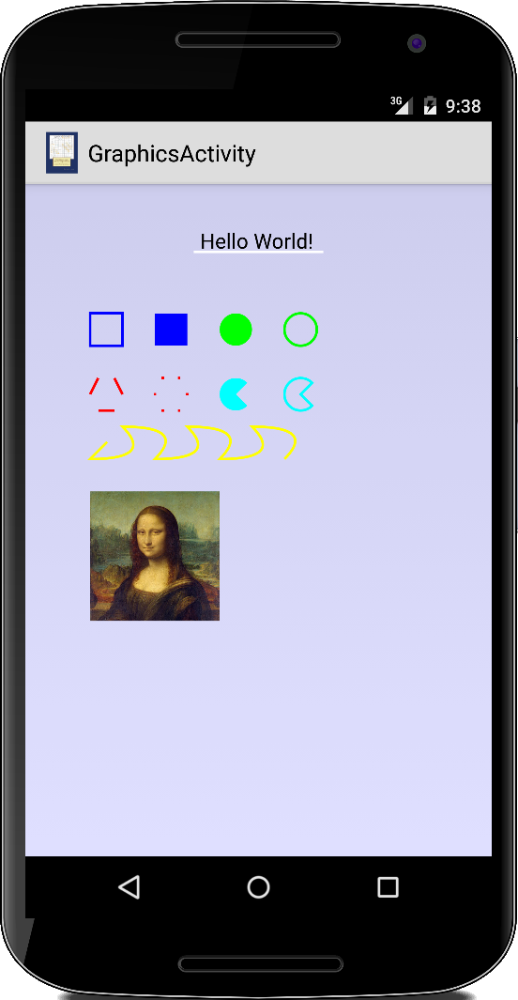
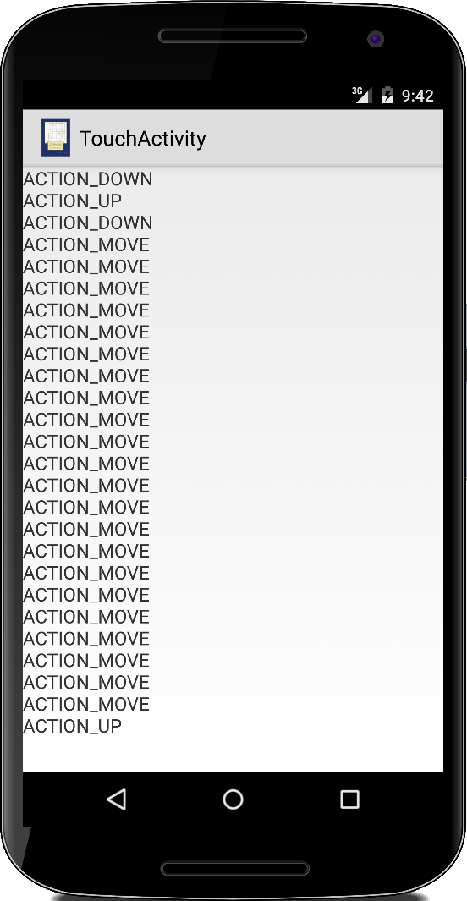

Graphics
Zu Benutzeroberflächen gehören nicht nur UI-Widgets, sondern auch 2D-Grafik. In diesem Kapitel wollen wir uns daher vor allem mit 2D-Grafik Anwendungen beschäftigen. Ausserdem werden wir sehen wie Tasten- und vor allem Toucheingaben funktionieren, und auch verschiedene Gesten werden wir kennen lernen. Das eine oder andere Beispiel sollte uns aus dem ersten Buch bekannt sein.
.
View
Bevor wir mit unseren ersten Grafikprogrammen beginnen, müssen wir uns mit der View Klasse vertraut machen. Betrachten wir folgendes einfaches Beispiel:
public class GraphicsActivity extends Activity {
@Override
public void onCreate(Bundle savedInstanceState) {
super.onCreate(savedInstanceState);
setContentView(new GraphicsView(this));
}
}
Der Unterschied zum letzten Kapitel ist, dass wir in der setContentView() Methode keine Referenz auf eine Resource geben, sondern unsere eigene Klasse, einen View übergeben. Einen eigenen View zu schreiben ist denkbar einfach: wir erben von der Android View Klasse und überschreiben die onDraw() Methode:
class GraphicsView extends View { public GraphicsView(Context context) { super(context); } @Override protected void onDraw(Canvas canvas) { ... } }
Alles was mit Zeichnen zu tun hat, passiert in der onDraw() Methode.
.
Graphics
Das Grafikmodell von Android unterscheidet sich ein wenig von dem objektorientierten Ansatz, den die ACM-Grafikbibliothek verwendet. Während wir im ACM-Fall GObjects, wie ein GRect oder einen GLabel, zum Zeichnen verwendet haben, verwendet Android die Canvas-Klasse mit ihren Zeichenmethoden. Das Canvas-Objekt wird uns als Argument in der onDraw() Methode übergeben:
protected void onDraw(Canvas canvas) { setBackgroundColor(0x200000ff); Paint paint = new Paint(Paint.ANTI_ALIAS_FLAG); paint.setColor(Color.BLACK); paint.setTextSize(64f); canvas.drawText("Hello World!", getWidth() / 2 - 180, 200, paint); }
Zum Beispiel, wenn wir Text auf unseren View schreiben wollen, verwenden wir die drawText() Methode des Canvas-Objekts. Dabei gibt es noch zwei Dinge zu beachten:
- das Farbmodell von Android unterscheidet sich ein wenig von dem in Standard Java: in Android sind die Farben Integers, wobei die vier Bytes für den Alpha-, Rot-, Grün- und Blauwert stehen. Das erklärt die lustig aussehende Zahl "0x200000ff", die ein Integer in hexadezimaler Schreibweise ist. Es gibt auch die üblichen vordefinierten Farben, wie z.B. Color.BLACK. Und wir können natürlich auch unsere eigenen Farben mit der Methode Color.argb(127, 255, 0, 0) erstellen.
- die Klasse Paint: diese wird als Parameter an alle Zeichenmethoden übergeben. Es spezifiziert Dinge, die Android wissen muss, wenn es Sachen zeichnen soll, wie die Farbe oder Schriftart die es verwenden soll, welche Schriftgröße, und ob geometrische Objekte ausgefüllt werden sollen oder nicht.
Die onDraw() Methode wird von Android jedes Mal aufgerufen, wenn der Bildschirm neu gezeichnet werden muss. Im Allgemeinen sollte man sich angewöhnen, so wenig wie möglich in dieser Methode zu tun, dann läuft unsere Anwendung auch schnell und reibungslos.
.
Drawing Methods
Betrachten wir die verschiedenen Zeichenmethoden die die Canvas Klasse unterstützt. Die drawText() Methode haben wir ja bereits oben gesehen. Als nächstes sehen wir uns an, wie wir Linien zeichnen:
...
paint.setStyle(Paint.Style.STROKE);
paint.setColor(Color.WHITE);
paint.setStrokeWidth(8);
canvas.drawLine(getWidth() / 2 - 200, 210, getWidth() / 2 + 200, 210, paint);
...
Mit der Methode setStrokeWidth() können wir die Dicke der Linie festlegen. Das Zeichnen von Rechtecken, Ovalen und Bögen folgt dem gleichen Muster:
...
float x = 200;
float y = 400;
float w = 100;
float h = 100;
paint.setColor(Color.BLUE);
canvas.drawRect(x, y, x + w, y + h, paint);
x += 200;
paint.setStyle(Paint.Style.FILL);
canvas.drawRect(x, y, x + w, y + h, paint);
x += 200;
paint.setColor(Color.GREEN);
canvas.drawOval(new RectF(x, y, x + w, y + h), paint);
x += 200;
paint.setColor(Color.GREEN);
paint.setStyle(Paint.Style.STROKE);
canvas.drawOval(new RectF(x, y, x + w, y + h), paint);
x += 200;
paint.setColor(Color.CYAN);
paint.setStyle(Paint.Style.FILL);
RectF mRectF = new RectF(x, y, x + w, y + h);
float startAngle = 45;
float sweepAngle = 270;
canvas.drawArc(mRectF, startAngle, sweepAngle, true, paint);
x += 200;
paint.setStyle(Paint.Style.STROKE);
mRectF = new RectF(x, y, x + w, y + h);
canvas.drawArc(mRectF, startAngle, sweepAngle, true, paint);
...
Wir können diese Objekte ausfüllen, indem wir den Stil des Paint Objektes auf Paint.Style.FILL setzen. Wenn wir nur den Rand dieser Objekte zeichnen wollen, setzen wir den Stil auf Paint.Style.STROKE. Interessant ist auch, dass drawOval() und drawArc() ein RectF als Parameter benötigen.
Zwei interessante Methoden, die in der ACM-Grafikbibliothek keine Entsprechung haben, sind die drawLines() und die drawPoints() Methode:
...
x = 200;
y += 200;
float[] pts = { 200, 650, 225, 600, 275, 600, 300, 650, 275, 700, 225, 700 };
paint.setColor(Color.RED);
paint.setStyle(Paint.Style.STROKE);
canvas.drawLines(pts, paint);
x += 200;
float[] pts2 = { 400, 650, 425, 600, 475, 600, 500, 650, 475, 700, 425, 700 };
canvas.drawPoints(pts2, paint);
...
Die zweite macht genau das, was man von ihr erwarten würde. Die erste zeichnet jedoch nur Liniensegmente. Wenn wir nach etwas suchen, das das GPolygon nachahmt, dann ist die drawPath() Methode wohl am ähnlichsten:
...
x = 200;
y += 250;
Path path = new Path();
path.reset();
path.moveTo(x, y);
for (int i = 0; i < 7; i++) {
float x0 = x;
x += 100;
float y0 = y;
y += ((i % 2) - 0.5) * 200;
// path.lineTo(x, y);
path.quadTo(x, y, x0, y0);
}
// path.close();
paint.setColor(Color.YELLOW);
canvas.drawPath(path, paint);
...
Wir beginnen mit einem leeren Pfad (Path), den wir allerdings noch mit reset() zurücksetzen müssen. Mit der moveTo() Methode fügen wir den Anfangspunkt zu unserem Pfad. Von wo aus wir dann zum nächsten Punkt und danach zu allen anderen Punkten gehen. Für die Verbindungen zwischen den Punkten können wir eine von drei verschiedenen Methoden verwenden:
- lineTo(): verbindet zwei Punkte einfach mit einer geraden Linie.
- quadTo(): verwendet eine quadratische Bezierkurve, um zwei Punkte zu verbinden.
- cubicTo(): verwendet eine kubische Bezierkurve, um zwei Punkte zu verbinden.
Falls wir noch nie etwas von Bézier-Kurven[1] gehört haben, kann man in der Wikipedia nachlesen, wie die im Detail funktionieren.
Schließlich können wir auch Bitmaps zeichnen:
...
x = 200;
y += 200;
try {
InputStream is = getAssets().open("Mona_Lisa.jpg");
Bitmap bitmap = BitmapFactory.decodeStream(is);
canvas.drawBitmap(bitmap, x, y, null);
} catch (IOException e) {
Log.e("GraphicsActivity", e.getMessage());
}
...
Wir haben also für jedes unserer ACM-Grafikobjekte eine entsprechende Androids Convas Zeichnungsmethode gefunden:
| ACM graphics object | Android drawing method |
| GLabel | drawText() |
| GLine | drawLine() |
| GRect | drawRect() |
| GOval | drawOval() |
| GArc | drawArc() |
| GPolygon | drawPath() |
| GImage | drawBitmap() |
.
Confetti
Um ein Gefühl dafür zu bekommen, wie das Zeichnen in Android funktioniert, beginnen wir mit einem Beispiel aus dem ersten Semester, dem Konfetti-Programm. Die Activity bleibt die gleiche wie oben. Wir müssen uns nur um den View kümmern:
class ConfettiView extends View {
private Paint paint;
private Random rgen = new Random();
public ConfettiView(Context context) {
super(context);
paint = new Paint(Paint.ANTI_ALIAS_FLAG);
paint.setStyle(Paint.Style.FILL);
}
@Override
protected void onDraw(Canvas canvas) {
// create randomly sized oval
int w = SIZE / 2 + rgen.nextInt(SIZE);
int x = -SIZE + rgen.nextInt(getWidth());
int y = -SIZE + rgen.nextInt(getHeight());
paint.setColor(rgen.nextInt());
canvas.drawOval(new RectF(x, y, x + w, y + w), paint);
pause(DELAY);
invalidate();
}
}
Vergleicht man den Code mit unserem vorherigen Beispiel, so sind die beiden sehr ähnlich: Wir zeichnen ein zufällig gefärbtes Oval an einer zufälligen Position auf dem Bildschirm mit der drawOval() Methode. Da wir mehr als ein Oval zeichnen wollen, pausieren wir ein wenig und rufen dann die invalidate() Methode auf. Die sagt dem Bildschirm, dass er sich neu zeichnen soll, also dass die onDraw() Methode wieder aufgerufen werden soll.
Wenn wir den Code ausführen sehen wir, dass er zwar Ovale zeichnet, aber immer wieder die zuvor gezeichneten Ovale löscht. Dies ist ein großer Unterschied zu dem was wir von der ACM Graphikbibliothek her gewohnt sind. Jedes Mal, wenn die onDraw()-Methode aufgerufen wird, wird der Bildschirm gelöscht. Für unser Confetti Programm ist das natürlich nicht sehr hilfreich.
.
ConfettiBitmap
Eine Lösungsansatz ist sich irgendwie daran zu erinnern, was man schon gezeichnet hat. Eine Möglichkeit ist eine Bitmap zu verwenden. Statt direkt auf die Leinwand zu zeichnen, zeichnen wir in eine Bitmap. Zuerst definieren wir die Bitmap, und da wir sie ja wiederverwenden wollen, tun wir das als Instanzvariable:
class ConfettiBitmapView extends View {
private Bitmap bitmap;
...
protected void onSizeChanged(int w, int h, int oldw, int oldh) {
if (bitmap != null) {
bitmap.recycle();
}
bitmap = Bitmap.createBitmap(w, h, Bitmap.Config.ARGB_8888);
}
@Override
protected void onDraw(Canvas canvas) {
...
Canvas can = new Canvas(bitmap);
can.drawOval(new RectF(x, y, x + w, y + w), cPaint);
canvas.drawBitmap(bitmap, 0, 0, null);
...
}
}
Dann erstellen wir in der onSizeChanged() Methode eine neue Bitmap. Diese Methode wird immer dann aufgerufen, wenn sich die Größe des Bildschirms ändert, was beim Start der Aktivität und beim Drehen des Bildschirms geschieht. Der Code in der onDraw() Methode ist fast identisch, mit dem feinen Unterschied, dass wir das Oval in die Bitmap zeichnen. Denn aus einer Bitmap können wir einen Canvas machen, und in den können wir dann ganz normal zeichnen. Zum Schluß müssen wir noch die Bitmap auf den echten Canvas zeichnen. Funktioniert großartig.
GConfetti
Ein anderer Lösungsansatz, ist es aus den Confetti Objekte zu machen, so wie die GOvals in der ACM Bibliothek. Für die Confetti müssen wir uns ihre Position und Farbe merken. Also schreiben wir eine Klasse GGOval, mit den folgenden Instanzvariablen:
class GGOval {
private int x, y, w, h;
private Paint paint;
Im Constructor initialisieren wir diese dann:
public GGOval(int x, int y, int w, int h) {
this.x = x;
this.y = y;
this.w = w;
this.h = h;
this.paint = new Paint(Paint.ANTI_ALIAS_FLAG);
this.paint.setStyle(Paint.Style.FILL);
}
Wir benötigen noch eine setColor() Methode, um die Farbe zu setzen:
public void setColor(int color) {
paint.setColor(color);
}
Und schließlich wäre es noch schön, wenn die Konfetti wüssten, wie sie sich selbst zeichnen sollen, wenn sie einen Canvas bekommen:
public void draw(Canvas canvas) {
canvas.drawOval(new RectF(this.x, this.y, this.x + this.w, this.y + this.h), paint);
}
}
Das sieht schon sehr nach ACM Graphics Library aus, oder?
Also benutzen wir mal unsere GGOvals. In der GConfettiView Klasse instanziieren wir zunächst eine Liste von confettis. Dabei handelt es sich einfach um eine Liste von GGOvals:
class GConfettiView extends View {
private Random rgen = new Random();
private List<GGOval> confettis = new ArrayList<GGOval>();
public GConfettiView(Context context) {
super(context);
}
public void addNewConfetti() {
// create randomly sized oval
int width = SIZE / 2 + rgen.nextInt(SIZE);
int x = -SIZE + rgen.nextInt(getWidth());
int y = -SIZE + rgen.nextInt(getHeight());
GGOval oval = new GGOval(x, y, width, width);
// assign random color
oval.setColor(rgen.nextInt());
// add to list
confettis.add(oval);
}
@Override
protected void onDraw(Canvas canvas) {
setBackgroundColor(Color.WHITE);
addNewConfetti();
// draw all objects
for (GGOval ov : confettis) {
ov.draw(canvas);
}
pause(DELAY);
invalidate();
}
}
In der onDraw() Methode erstellen wir mit der addNewConfetti() Methode bei jedem Aufruf ein neues Konfetti. In dieser Methode wird ein neues zufälliges GGOval erstellt und zu unserer Liste der Confettis hinzugefügt. Danach gehen wir unsere Liste von Konfettis durch und sagen jedem Konfetti, dass es sich auf unseren Canvas zeichnen soll. Das funktioniert auch ganz gut.
Wenn wir wollen, können wir auch alle anderen GObject Klassen aus der ACM-Grafikbibliothek implementieren. Sobald wir das Thema Threading abgehandelt haben, ist das auch der Plan: wir werden die gesamte ACM-Grafikbibliothek implementieren. Das bedeutet, dass fast alle unsere alten GraphicsPrograms aus dem ersten und zweiten Semester jetzt auch auf Android laufen!
.
Touch
Der einfachste Weg, um Benutzer zur Interaktion mit unserer Anwendung zu bewegen, sind Touch-Events. Alles was wir tun müssen, ist die onTouchEvent() Methode zu überschreiben. Das kann man sowohl in der Activity als auch im View tun:
public class TouchActivity extends Activity {
@Override
public boolean onTouchEvent(MotionEvent event) {
int x = (int) event.getX();
int y = (int) event.getY();
switch (event.getAction()) {
case (MotionEvent.ACTION_CANCEL):
Log.i(TAG, "ACTION_CANCEL");
return true;
case (MotionEvent.ACTION_DOWN):
Log.i(TAG, "ACTION_DOWN");
return true;
case (MotionEvent.ACTION_MOVE):
Log.i(TAG, "ACTION_MOVE");
return true;
case (MotionEvent.ACTION_OUTSIDE):
Log.i(TAG, "ACTION_OUTSIDE");
return true;
case (MotionEvent.ACTION_SCROLL):
Log.i(TAG, "ACTION_SCROLL");
return true;
case (MotionEvent.ACTION_UP):
Log.i(TAG, "ACTION_UP");
return true;
case (MotionEvent.ACTION_POINTER_2_DOWN):
Log.i(TAG, "ACTION_POINTER_2_DOWN");
return true;
default:
return super.onTouchEvent(event);
}
}
}
Die nützlichsten Evenst sind ACTION_DOWN, ACTION_MOVE und ACTION_UP. Interessant ist auch der ACTION_POINTER_2_DOWN Event, der entsteht wenn man mit mehr als nur einem Finger das Display berührt.
Über den MotionEvent Parameter der onTouchEvent() Methode erhalten wir die x- und y-Position, an der der Nutzer den Bildschirm berührt hat, aber auch den Zeitpunkt des Ereignisses, getEventTime(), und bei einigen Geräten sogar den Druck, getPressure(). Normalerweise verwenden wir diese Methoden nicht direkt, aber der Gestendetektor verwendet sie bei der Erkennung von Gesten.
Zusätzlich zu den Touch Events gibt es auch noch die Key Events, an die wir über die onKeyDown() Methode rankommen:
@Override
public boolean onKeyDown(int keyCode, KeyEvent event) {
Log.i(TAG, "keyCode=" + keyCode);
return super.onKeyDown(keyCode, event);
}
Die wenigsten Smartphone haben heutzutage noch Tastaturen, aber für einige Tablets gibt es Bluetooth Tastaturen und dann macht auch der Key Event wieder Sinn.
.
Gestures
Wahrscheinlich die bekanntesten Gesten sind der Swipe-Left und der Swipe-Right einer bekannten Dating-App. Das geht sogar soweit, dass ein "left swipe" als Geste der Ablehnung im digitalen Zeitalter geworden ist. Wie erkennt man also Gesten? Glücklicherweise erledigt Android die meiste Arbeit für uns. Wir verwenden dazu die Klasse GestureDetector. In der onTouchEvent() Methode senden wir alle Touch Events zur Analyse an den GestureDetector:
public class GestureActivity extends Activity {
private GestureDetector mDetector;
@Override
public void onCreate(Bundle savedInstanceState) {
super.onCreate(savedInstanceState);
mDetector = new GestureDetector(this, new MyGestureListener());
}
@Override
public boolean onTouchEvent(MotionEvent event) {
this.mDetector.onTouchEvent(event);
return super.onTouchEvent(event);
}
private class MyGestureListener extends GestureDetector.SimpleOnGestureListener {
private final String TAG = "MyGestureListener";
// onDown should always return true, because all gestures start with
// onDown
@Override
public boolean onDown(MotionEvent event) {
Log.d(TAG, "onDown");
return true;
}
@Override
public boolean onFling(MotionEvent event1, MotionEvent event2, float velocityX, float velocityY) {
Log.d(TAG, "onFling");
return true;
}
@Override
public void onLongPress(MotionEvent event) {
Log.d(TAG, "onLongPress");
}
@Override
public boolean onScroll(MotionEvent event1, MotionEvent event2, float distanceX, float distanceY) {
Log.d(TAG, "onScroll");
return true;
}
@Override
public void onShowPress(MotionEvent event) {
Log.d(TAG, "onShowPress");
}
@Override
public boolean onSingleTapUp(MotionEvent event) {
Log.d(TAG, "onSingleTapUp");
return true;
}
@Override
public boolean onDoubleTap(MotionEvent event) {
Log.d(TAG, "onDoubleTap");
return true;
}
@Override
public boolean onDoubleTapEvent(MotionEvent event) {
Log.d(TAG, "onDoubleTapEvent");
return true;
}
@Override
public boolean onSingleTapConfirmed(MotionEvent event) {
Log.d(TAG, "onSingleTapConfirmed");
return true;
}
}
}
Die Namen der Methoden sind ziemlich selbsterklärend, vielleicht ist der Unterschied zwischen einem Scroll und einem Fling nicht ganz klar:
- scroll: die onScroll() Methode wird mehrmals aufgerufen, während der Benutzer seinen Finger über den Bildschirm bewegt.
- fling: die onFling() Methode wird nur einmal am Ende eines Scrollvorgangs aufgerufen.
Ein Beispiel für sogenannte Multitouch Gesten werden wir noch in den Challenges sehen.
.
.
Review
In diesem Kapitel haben wir uns mit 2D Graphik beschäftigt und dabei die Klassen Color, Paint und Canvas kennengelernt. Wir haben auch gesehen wofür Views gut sind und wie man sie modifiziert. Schließlich haben wir noch ein bisschen was zu Touch und Key Events gehört, und unsere ersten einfachen Gesten erkannt.
.
Projekte
In diesem Kapitel gibt es nicht allzuviele Projekte, die meisten sind alte Bekannte aus dem ersten und zweiten Semester. Allerdings beschätigen wir uns in den Special Topics Kapiteln "Graphics Performance" und "Libraries" noch einmal ganz ausführlich mit Graphics.
.
Mondrian
Im Kapitel zu Rekursion aus dem zweiten Buch haben wir Mondrians gezeichnet. Die Idee war die große Leinwand (canvas) in immer kleinere aufzuteilen und dabei eine der folgenden drei Optionen zu wählen:
- wir teilen die Leinwand horizontal in zwei kleinere Leinwände oder
- wir teilen die Leinwand vertikal in zwei kleinere Leinwände oder
- wir zeichnen ein Rechteck in einer der Farben weiß, rot, blau oder gelb.
Das wiederholen wir bis die Leinwände zu klein sind.
Das Beispiel von damals lässt sich auch recht einfach auf Android übertragen. Wir brauchen wieder eine Activity und einen View. In der onDraw() Methode des Views rufen wir dann die rekusive drawMondrian() Methode auf. Bis auf die drawRectangle() können wir den Code aus dem zweiten Semester einfach übernehmen.
Was jetzt noch schön wäre, wenn wir durch Berühren des Displays einen neuen Mondrian zeichnen lassen. Das geht ganz einfach, wenn wir im Constructor des Views noch einen OnTouchListener hinzufügen:
public MondrianView(Context context) {
super(context);
this.setOnTouchListener(new View.OnTouchListener() {
@Override
public boolean onTouch(View vw, MotionEvent event) {
switch (event.getAction()) {
case MotionEvent.ACTION_DOWN:
invalidate();
break;
}
return true;
}
});
}
Die invalidate() Methode veranlasst den View sich neu zu zeichnen. Das ist viel besser als die onDraw() Methode direkt aufzurufen (was übrigens auch gar nicht geht).
.
GameOfLife
Auch Conways Game of Life haben schon im zweiten Buch kennengelernt. Kurz zur Wiederholung: Das Universum des Spiel des Lebens ist ein zweidimensionales Gitter aus quadratischen Zellen (GRects), von denen jede in einer von zwei möglichen Zuständen sein kann: lebend (schwarz) oder tot (weiß). Jede Zelle hat acht Nachbarn, und abhängig vom Zustand der Nachbarn entscheidet sich der eigene Zustand in der nächsten Runde nach folgenden Regeln:
- jede lebende Zelle mit weniger als zwei lebenden Nachbarn stirbt (Unter-Bevölkerung)
- jede lebende Zelle mit zwei oder drei lebenden Nachbarn lebt
- jede lebende Zelle mit mehr als drei lebenden Nachbarn stirbt (Über-Bevölkerung)
- jede tote Zelle mit genau drei lebenden Nachbarn wird eine lebende Zelle (Fortpflanzung)
Erst einmal können wir auch wie oben einfach den Code aus dem zweiten Semester übernehmen und lediglich beim Zeichnen der kleinen Rechtecke anstelle der GRects die drawRect() Methode verwenden.
Für die Animation verwenden wir ähnlich wie beim GGRect Beispiel oben die invalidate() Methode am Ende der onDraw() Methode. Dann zeichnet sich das Spiel neu mit dem nächsten Schritt. Der Game Loop findet also eigentlich in der onDraw() Methode statt.
Wir stellen allerdings schnell fest, dass die Animation nicht besonders schnell ist. Hier sehen wir das erste Mal ziemlich krass den Performanceunterschied zwischen einer ARM CPU mit 1.5 GHz und einer Intel CPU mit 2.4 GHz. Gefühlt ist die Intel CPU zehnmal schneller.
Jammern hilft uns jetzt aber nicht weiter. Oben im Beispiel Confetti haben wir gesehen wie wir eine Bitmap zum malen verwendet haben. Das Gleiche können wir hier auch machen. Wir generieren eine Bitmap die genauso groß ist wie unser cell[][] Array, und verwenden dann einfach die setPixel() Methode der Bitmap Klasse um die Pixel schwarz oder weiß zu malen. Bevor wir die Bitmap dann zeichnen, können wir noch einen kleinen Trick verwenden:
Matrix m = new Matrix(); m.setScale((float) mCanvasWidth / SIZE_X, (float) mCanvasHeight / SIZE_Y); canvas.drawBitmap(bitmap, m, null);
wir skalieren die Bitmap so, dass sie den gesamten Canvas ausfüllt.
Was ich bisher auch nicht wusste, auch Conway's Game of Life ist wie Karel eine Universal Computing Machine, dazu später mehr unter Research.
.
Paint
Ganz ähnlich wie das vorherigen Beispiel haben wir auch Paint schon mal gesehen, und zwar als ConnectTheClicks im ersten Semester. Dabei handelt es sich um ein Spiel in dem der Nutzer mit dem Finger eine Stelle berührt, und diese dann mit der vorhergehenden durch eine Linie verbunden wird.
Wenn wir das Spiel wie im ersten Semester implementieren, werden wir das gleiche Problem wie bei dem Beispiel Confetti haben: die alten Linien werden nicht mehr gezeichnet. Hier gibt es zwei Lösungen: entweder wir verwenden wieder eine Bitmap, oder aber, und das ist dieses Mal vielleicht geschickter, merken wir uns alle Punkte in einer Liste als Instanzvariable in der Activity:
private ArrayList<Point> points = new ArrayList<Point>();
Bei jedem onTouch Event fügen wir dann einen neuen Punkt hinzu und veranlassen einen Redraw mit invalidate():
points.add(new Point(x, y)); invalidate();
In der onDraw() Methode zeichnen wir dann einfach Linien zwischen den Punkten:
protected void onDraw(Canvas canvas) {
...
if (points.size() > 1) {
Point p0 = points.get(0);
for (int i = 1; i < points.size(); i++) {
Point p1 = points.get(i);
canvas.drawLine(p0.x, p0.y, p1.x, p1.y, color);
p0 = p1;
}
}
}
Warum haben wir die Liste von Punkten als Instanzvariable in der Activity und nicht im View gespeichert? Der Grund war weil wir noch etwas vor haben: wir wollen nämlich, dass wenn wir unser Gerät drehen, unsere Zeichnung nicht einfach verschwindet. Die beiden Methoden onSaveInstanceState() und onRestoreInstanceState(), werden nämlich von Android aufgerufen wenn unser Gerät sich dreht
protected void onSaveInstanceState(Bundle outState) {
outState.putSerializable("points", points);
}
protected void onRestoreInstanceState(Bundle savedInstanceState) {
if (savedInstanceState != null) {
Object obj = savedInstanceState.getSerializable("points");
if (obj != null) {
points = (ArrayList<Point>) obj;
}
}
}
und wir können sie verwenden, um unseren Zustand kurz im Bundle zwischenzuspeichern und dann wiederherzustellen. Wie das mit dem Serializable genau funktioniert werden wir uns im fünften Kapitel noch einmal genauer ansehen.
.
FingerPaint
Das Paint Beispiel schaut doch ziemlich häßlich aus, oder? Inzwischen sind wir ja im 6. Semester, da sollten unsere Programme schon etwas hübscher aussehen. Hübscher heißt aber natürlich auch komplizierter, wenigstens etwas.
Die Klasse Path ist hier die Lösung. Wir haben sie am Anfang des Kapitels schon einmal kurz gesehen.
private class FingerPaintView extends View {
private Paint paint;
private Path path;
private float curX, curY;
private static final float TOUCH_TOLERANCE = 4;
public FingerPaintView(Context c) {
super(c);
path = new Path();
paint = new Paint();
...
}
protected void onDraw(Canvas canvas) {
canvas.drawPath(path, paint);
}
...
}
In ihr speichern wir unseren Pfad. Die beiden Variablen curX und curY benötigen wir um uns zu merken wo der Nutzer das letzte Mal mit dem Finger war. Die onDraw() Methode ist gespenstisch einfach.
Wo es etwas komplizierter wird ist iń der onTouchEvent() Methode, wir wollen auf die drei Events ACTION_DOWN, ACTION_MOVE und ACTION_UP reagieren:
public boolean onTouchEvent(MotionEvent event) {
float x = event.getX();
float y = event.getY();
switch (event.getAction()) {
case MotionEvent.ACTION_DOWN:
touchDown(x, y);
invalidate();
break;
case MotionEvent.ACTION_MOVE:
touchMove(x, y);
invalidate();
break;
case MotionEvent.ACTION_UP:
touchUp();
invalidate();
break;
}
return true;
}
Bei ACTION_DOWN wollen wir uns merken wo der Nutzer getoucht hat, und wollen den Anfang von unserem Pfad auf diesen Punkt legen:
private void touchDown(float x, float y) {
path.reset();
path.moveTo(x, y);
curX = x;
curY = y;
}
Bei ACTION_MOVE liegt der Hammer begraben:
private void touchMove(float x, float y) {
float dx = Math.abs(x - curX);
float dy = Math.abs(y - curY);
if (dx >= TOUCH_TOLERANCE || dy >= TOUCH_TOLERANCE) {
path.quadTo(curX, curY, (x + curX) / 2, (y + curY) / 2);
curX = x;
curY = y;
}
}
Zunächst stellen wir fest, ob die Distanz zum vorhergehenden Punkt mindestens vier Pixel ist, nur dann fügen wir ein neues Stück zu unserem Pfad hinzu. Wir könnten hier einfach die Methode lineTo() verwenden, dann sieht das Ganze aber etwas eckig aus, eher wie Kindergarten. Wenn wir aber anstelle die Methode quadTo() verwenden, also Bézier Kurven zeichnen, dann sieht das echt cool aus.
Schließlich sollten wir noch bei ACTION_UP eine Linie zum letzten Punkt zeichnen:
private void touchUp() {
path.lineTo(curX, curY);
}
Wenn wir noch ein Grid also Hintergrund hinzufügen,
private void drawGrid(Canvas canvas) {
Paint gridPaint = new Paint();
gridPaint.setAntiAlias(true);
gridPaint.setDither(true);
gridPaint.setColor(GRID_COLOR);
gridPaint.setStyle(Paint.Style.STROKE);
gridPaint.setStrokeWidth(1);
for (int i = 0; i < getWidth(); i += 50) {
canvas.drawLine(i, 0, i, getHeight(), gridPaint);
}
for (int i = 0; i < getHeight(); i += 50) {
canvas.drawLine(0, i, getWidth(), i, gridPaint);
}
}
dann fühlt sich die ganze App noch einen Tick professioneller an. Wenn wir jetzt noch unsere Kunstwerke speichern könnten, dann könnten wir damit sogar Geld verdienen.
.
RandomArt
RandomArt war auch ein Projekt im zweites Buch wo wir aus Mathematik, in diesem Fall dem Sinus und dem Cosinus, hübsche Graphiken erzeugt haben. Auch dieses Projekt lässt sich einfach in ein Android Projekt umwandeln. Nach unseren obigen Erfahrungen, macht es wahrscheinlich Sinn gleich mit einer Bitmap als grafischer Datenstruktur anzufangen, es sei denn wir wollen wieder etwas länger warten.
Was wir hier aber lernen wollen, ist wie das mit den Swipe-Left und Swipe-Right Gesten funktioniert. Wir wollen bei einer Swipe-Left Geste das erzeugte Bild verwerfen und eine neues erzeugen. Bei einem Swipe-Right hat uns das Bild aber gefallen und wir würden es gerne auf unserer SD Karte speichern.
Bisher haben wir eigentlich nur die Fling Geste kennen gelernt, die unterscheidet aber noch nicht zwischen rechts und links, oder oben und unten. Mit der Klasse OnSwipeListener (die nicht Teil der Android API ist) geht das aber ganz einfach. Im Constructor des Views
public RandomArtView(final Context context) {
super(context);
setOnTouchListener(new OnSwipeListener(context) {
public void onSwipeRight() {
saveAsPNG();
}
public void onSwipeLeft() {
Toast.makeText(context, "calculating...", Toast.LENGTH_SHORT).show();
// needed for toast to become visible:
Thread.yield();
pause(100);
Thread.yield();
// do a redraw:
postInvalidate();
}
});
}
setzen wir den onTouchListener auf unseren OnSwipeListener. Dort überschreiben wir dann die beiden Methoden die uns interessieren, in dem Fall onSwipeRight() und onSwipeLeftt().
Interessant ist vielleicht noch, dass wir hier postInvalidate() anstelle von invalidate() verwendet haben. Wenn wir nur mal so zum Testen invalidate() verwenden, stellen wir fest, dass der Toast unsichtbar bleibt. Also offensichtlich funktioniert es nicht so gut hier. Der Grund dafür ist, dass die Methode onSwipeLeft() eigentlich in einem anderen Thread ausgeführt wird, dem Event-Thread. Der View lebt aber im UI-Thread, und das invalidate() gehört zum UI Thread. Wenn wir also aus einem anderen Thread heraus dem UI-Thread sagen wollen, dass er sich doch neu zeichnen soll, dann müssen wir die postInvalidate() Methode verwenden.
Obwohl wir noch gar nicht gelernt haben, wie man auf die SD-Karte schreibt, ist die saveAsPNG() Methode nur drei Zeilen lang und die sind ziemlich selbst erklärend:
private void saveAsPNG() {
try {
OutputStream stream = new FileOutputStream("/sdcard/RandomArt.png");
bitmap.compress(CompressFormat.PNG, 0, stream);
stream.close();
} catch (IOException e) {
e.printStackTrace();
}
}
Aber im Kapitel Persistence mehr dazu.
.
Challenges
.
MultiTouch
Wenn wir uns nochmal unser Beispiel zu Gesten ansehen, fällt auf, dass die Gesten Zoom und Rotate fehlen. Das wollen wir hier nachholen. Die Idee ist ein Programm zu schreiben, dass Bilder laden kann, diese dann mittels Gesten verschieben, vergrößern, verkleinern und rotieren kann, und schließlich das Ergebnis auch abspeichern kann.
Dazu definieren wir die folgenden Gesten:
- Ein-Finger-Geste: benutzt der Nutzer einen Finger wird das Bild hin- und her verschoben.
- Zwei-Finger-Geste: mit zwei Fingern kann der Nutzer rein und raus zoomen.
- Drei-Finger-Geste: erlaubt es dem Nutzer das Bild zu drehen.
In der Activty laden und speichern wir das Bild, getriggert über das Menu. Das Anzeigen des Bildes und das Verarbeiten der Gesten erfolgt im MultiTouchImageView von Jude Pereira [8]. Der ist ein ImageView und implementiert das OnTouchListener Interface:
// Copyright Jude Pereira
private class MultiTouchImageView extends ImageView implements View.OnTouchListener {
// we can be in one of these 3 states
private static final int NONE = 0;
private static final int DRAG = 1;
private static final int ZOOM = 2;
private int mode = NONE;
// these matrices will be used to move and zoom image
private Matrix matrix = new Matrix();
private Matrix savedMatrix = new Matrix();
// remember some things for zooming
private PointF start = new PointF();
private PointF mid = new PointF();
private float oldDist = 1f;
private float d = 0f;
private float newRot = 0f;
private float[] lastEvent = null;
public MultiTouchImageView(Context context) {
super(context);
this.setBackgroundColor(Color.BLACK);
this.setScaleType(ImageView.ScaleType.MATRIX);
this.setOnTouchListener(this);
this.setImageResource(R.drawable.om);
}
public void loadImageFromFile(String absolutePath) {
Bitmap bitmap = BitmapFactory.decodeFile(absolutePath);
if (bitmap != null) {
init();
this.setImageBitmap(bitmap);
}
}
private void init() {
mode = NONE;
matrix = new Matrix();
savedMatrix = new Matrix();
start = new PointF();
mid = new PointF();
oldDist = 1f;
d = 0f;
newRot = 0f;
lastEvent = null;
setImageMatrix(matrix);
}
public boolean onTouch(View v, MotionEvent event) {
ImageView view = (ImageView) v;
switch (event.getAction() & MotionEvent.ACTION_MASK) {
case MotionEvent.ACTION_DOWN:
savedMatrix.set(matrix);
start.set(event.getX(), event.getY());
mode = DRAG;
lastEvent = null;
break;
case MotionEvent.ACTION_POINTER_DOWN:
oldDist = spacing(event);
if (oldDist > 10f) {
savedMatrix.set(matrix);
midPoint(mid, event);
mode = ZOOM;
}
lastEvent = new float[4];
lastEvent[0] = event.getX(0);
lastEvent[1] = event.getX(1);
lastEvent[2] = event.getY(0);
lastEvent[3] = event.getY(1);
d = rotation(event);
break;
case MotionEvent.ACTION_UP:
case MotionEvent.ACTION_POINTER_UP:
mode = NONE;
lastEvent = null;
break;
case MotionEvent.ACTION_MOVE:
if (mode == DRAG) {
matrix.set(savedMatrix);
float dx = event.getX() - start.x;
float dy = event.getY() - start.y;
matrix.postTranslate(dx, dy);
} else if (mode == ZOOM) {
float newDist = spacing(event);
if (newDist > 10f) {
matrix.set(savedMatrix);
float scale = (newDist / oldDist);
matrix.postScale(scale, scale, mid.x, mid.y);
}
if (lastEvent != null && event.getPointerCount() == 3) {
newRot = rotation(event);
float r = newRot - d;
float[] values = new float[9];
matrix.getValues(values);
float tx = values[2];
float ty = values[5];
float sx = values[0];
float xc = (view.getWidth() / 2) * sx;
float yc = (view.getHeight() / 2) * sx;
matrix.postRotate(r, tx + xc, ty + yc);
}
}
break;
}
view.setImageMatrix(matrix);
return true;
}
private float spacing(MotionEvent event) {
float x = event.getX(0) - event.getX(1);
float y = event.getY(0) - event.getY(1);
return FloatMath.sqrt(x * x + y * y);
}
private void midPoint(PointF point, MotionEvent event) {
float x = event.getX(0) + event.getX(1);
float y = event.getY(0) + event.getY(1);
point.set(x / 2, y / 2);
}
private float rotation(MotionEvent event) {
double delta_x = (event.getX(0) - event.getX(1));
double delta_y = (event.getY(0) - event.getY(1));
double radians = Math.atan2(delta_y, delta_x);
return (float) Math.toDegrees(radians);
}
}
Der zentrale Trick hier ist, dass wir mit der Methode setImageMatrix() eine 3x3 Transformationsmatrix auf den View anwenden können. Die ermöglicht eine Skalierung, Verschiebung und Drehung des Views. Die restlichen Details entnimmt man besser dem Code direkt.
.
Research
Auch in diesem Kapitel gibt es einige Themen die man noch durch Eigenrecherche vertiefen kann.
.
Bézier Kurven
Bézier Kurven spielen eine wichtige Rolle in Computergrafik, Animation und auch in Fonts. Lesen Sie nach welche Arten von Bézier Kurven es gibt und wie sie funktionieren [1].
.
Universal Computing Machine
Wie haben jetzt schon ein paar mal was von einer "Universal Computing Machine" gehört. Was ist das? Warum sollte uns das vielleicht interessant? Sind Menschen Universal-Computing-Maschinen? Kann eine Universal Computing Machine Bewusstsein haben? Wenn ja, was wären die Konsequenzen?
.
Conway's Game of Life
Conways Spiel des Lebens ist uns das erste Mal im ersten Semester über den Weg gelaufen. Interessant ist dazu neben dem Wikipedia Artikel [2] auch ein Interview mit Conway selbst auf Numberphile [3] und schließlich ein bemerkenswertes YouTube-Video [4]. Conways Spiel des Lebens erscheint fast trivial, aber seine philosophischen Implikationen sind unermesslich. Erstens zeigt es, dass die Grundlage des Lebens, die Reproduktion, ein einfaches Regelwerk ist. Und zweitens zeigt es, dass dieselben Grundregeln die Basis einer Universal Computing Machines sind. Was Sie vielleicht in Ihrer Doktorarbeit beweisen könnten, dass das Spiel des Lebens auch Bewusstsein hat.
.
Copyright (c) 2005 Richard Ling [7].
Cellular Automata
Verwandt mit Comways Spiel des Lebens sind Cellular Automata. Eine kleine Einführung finden Sie im Wikipedia-Artikel [5]. Insbesondere das Unterkapitel "Elementare zelluläre Automaten" ist wichtig. Stephen Wolfram hat in seinem Buch [6] diese ausführlich untersucht. Bei einem dieser Automaten, nämlich Regel 110, handelt es sich auch, wie das Spiel des Lebens, um eine "Universal Computing Machine".
Wenn Sie nun nach Zeichen von Außerirdischen suchen, schauen Sie nicht weiter als nach rechts: es ist ganz klar, dass diese Kegelschnecke auf der rechten Seite die Regel 110 anzeigt. Offensichtlich wurde ihre DNA von Außerirdischen programmiert, um genau dieses Muster zu erzeugen und uns auf ihre Existenz hinzuweisen. Wenn wir die DNA dieses Tieres genauer analysieren würden, würden wir mit Sicherheit Anweisungen finden, wie wir sie erreichen können.
.
Fragen
-
Erläutern Sie wofür die drei Klassen “Color”, “Paint” und “Canvas” gut sind, evtl mit Beispiel.
-
Nennen Sie vier der Methoden, die verwendet werden können, um auf eine Leinwand (canvas) zu zeichnen.
-
Welche Methode müssen Sie überschreiben um auf Touch Events reagieren zu können?
-
Nennen Sie eine Geste die sehr einfach mit Androids GestureDetector Klasse umzusetzen ist.
-
Beschreiben Sie bitte in Worten was der folgende Code zeichnet:
public class GraphicsActivity extends Activity { public void onCreate(Bundle savedInstanceState) { super.onCreate(savedInstanceState); setContentView( new GraphicsView(this) ); } } class GraphicsView extends View { public GraphicsView(Context context) { super(context); } protected void onDraw(Canvas canvas) { setBackgroundColor(Color.BLACK); Paint cPaint = new Paint(Paint.ANTI_ALIAS_FLAG); cPaint.setStyle(Paint.Style.STROKE); cPaint.setColor(Color.RED); cPaint.setStrokeWidth(2); cPaint.setTextSize(24f); canvas.drawLine(40, 60, 150, 60, cPaint); canvas.drawText("Hi there!", 50, 50, cPaint); } }.
.
Referenzen
[1] Bézier curve, https://en.wikipedia.org/wiki/Bézier_curve
[2] Conways Spiel des Lebens, https://de.wikipedia.org/wiki/Conways_Spiel_des_Lebens
[3] Inventing Game of Life - Numberphile, https://www.youtube.com/watch?v=R9Plq-D1gEk
[4] Life in life, https://www.youtube.com/watch?v=xP5-iIeKXE8
[5] Cellular automaton, https://en.wikipedia.org/wiki/Cellular_automaton
[6] A New Kind of Science, by Stephen Wolfram, http://www.wolframscience.com/nks/
[7] Richard Ling, A Textile cone snail (Conus textile), https://commons.wikimedia.org/wiki/File:Textile_cone.JPG
{kind=link}
[8] Jude Pereira, Multi Touch in Android – Translate, Scale, and Rotate, https://judepereira.com/blog/multi-touch-in-android-translate-scale-and-rotate/
.